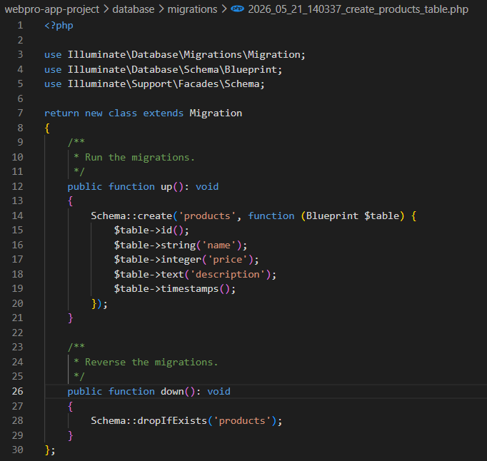
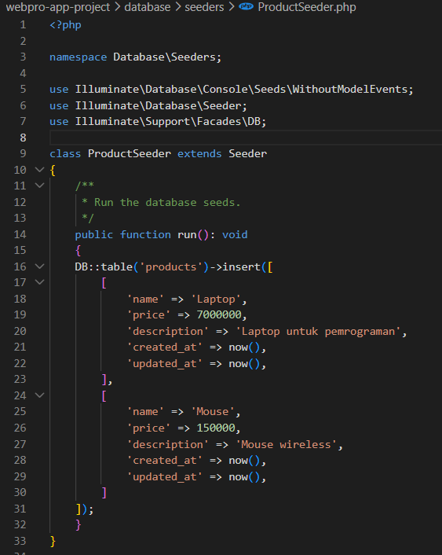

Laporan Praktikum 7 - Pemrograman Web
Migration, Seeding, Routing, Model, Controller, View
IF - Universitas Andalas
A. Pendahuluan
1. Konfigurasi Database (.env)
File environment global (.env) menyimpan kredensial database lokal. Hal ini memisahkan konfigurasi sensitif dari kode program inti aplikasi..
2. Migration
Fitur yang bertindak sebagai version control bagi skema database. Pengembang dapat mendesain struktur tabel secara konsisten menggunakan kode program PHP tanpa menyentuh DBMS manual.
3. Seeding
Proses pengisian data awal atau rekaman dummy ke dalam tabel pangkalan data secara otomatis untuk mempermudah proses pengujian fungsionalitas sistem.
4. Model (Eloquent ORM):
Menyediakan abstraksi berorientasi objek yang memetakan setiap tabel database menjadi satu representasi kelas kode program, menyederhanakan kueri SQL melalui Active Record.
5. Controller
Berfungsi mengelola alur logika aplikasi, menerima masukan data dari request pengguna, memprosesnya melalui Model, lalu mengembalikannya menuju komponen View.
6. View (Blade Layout)
Mesin pemrosesan template visual bawaan Laravel untuk memproduksi tampilan antarmuka pengguna secara dinamis dan mendukung reusabilitas komponen UI.
B. Tujuan Praktikum
Setelah menyelesaikan praktikum ini, mahasiswa diharapkan mampu:
- Memberikan pemahaman dan keterampilan dasar kepada mahasiswa dalam membangun aplikasi web modern berbasis framework PHP dengan menerapkan konsep MVC
- Memahami struktur dan alur kerja Laravel sebagai salah satu framework yang banyak digunakan dalam pengembangan aplikasi web.
- Melatih kemampuan mahasiswa dalam mengelola database menggunakan migration dan seeding.
- Membuat serta mengatur routing aplikasi, membangun model untuk interaksi data, serta membuat tampilan antarmuka menggunakan Blade Template Engine.
- Mengembangkan controller sebagai penghubung antara model, view, and request user.
- Mengimplementasikan seluruh materi dalam bentuk aplikasi CRUD (Create, Read, Update, Delete) sederhana.
C. Alat
Perangkat dan dependensi yang digunakan selama praktikum:
- Computer / Laptop
- XAMPP (Apache, MySQL, PHP)
- Visual Studio Code
- Composer, GIT, Node JS, NPM
D. Langkah-langkah Praktikum
Buka file .env pada root project Laravel, kemudian ubah konfigurasi database sesuai dengan pengaturan MySQL yang digunakan.

Jalankan perintah berikut di terminal untuk membuat file migration.
php artisan make:migration create_products_table

Selanjutnya buka file migration yang telah dibuat yang berada pada folder database/migrations, lalu pada method up() sesuaikan dengan gambar berikut.

terdiri dari id, name, price, description, dan timestamps untuk menyimpan waktu create dan update data.
Jalankan perintah berikut di terminal untuk menjalankan migration.
php artisan migrate

Jalankan perintah berikut di terminal untuk membuat file seeder untuk memasukkan data uji coba awal ke dalam tabel produk.
php artisan make:seeder ProductSeeder

Lalu buka file ProductSeeder.php di folder database/seeders, kemudian isi dengan data produk awal seperti Laptop dan Mouse seperti gambar berikut.

Selanjutnya daftarkan seeder pada file DatabaseSeeder.php dengan menambahkan syntax berikut
$this->call(ProductSeeder::class);

Seeder dijalankan agar data products otomatis tersimpan pada database. Bisa menggunakan 2 cara yaitu dengan mengetikkan perintah
php artisan db:seed
atau dengan menjalankan perintah berikut yang akan otomatis menjalankan migration dan seeding sekaligus.
php artisan migrate --seed
Setelah menjalankan perintah tersebut maka data produk yang telah dibuat pada file seeder akan otomatis tersimpan pada database, untuk mengecek apakah data sudah tersimpan atau belum bisa dengan mengakses phpMyAdmin lalu cek pada tabel products.

Model adalah kelas yang digunakan untuk berinteraksi dengan tabel di database menggunakan Eloquent ORM. Jalankan perintah berikut di terminal untuk membuat file model Product.
php artisan make:model Product

Setelah file model berhasil dibuat, buka file Product.php yang berada pada folder app/Models lalu sesuaikan dengan gambar berikut.

Menambahkan properti $fillable yang berfungsi untuk menentukan field mana saja yang boleh diisi saat membuat atau memperbarui data produk.
Controller adalah kelas yang digunakan untuk menangani request dan meresponsnya. Jalankan perintah berikut di terminal untuk membuat file controller Product.
php artisan make:controller ProductController

Setelah file controller berhasil dibuat, buka file ProductController.php yang berada pada folder app/Http/Controllers lalu sesuaikan dengan gambar berikut.

Menambahkan method index() yang mengambil semua data produk menggunakan Product::all() dan mengirimkannya ke view.
Routing digunakan untuk menentukan URL mana yang akan mengeksekusi fungsi tertentu pada controller. Buka file web.php yang berada pada routes/ lalu tambahkan routing berikut.
Route::get('/products', [ProductController::class, 'index']);

Routing tersebut akan mengarahkan URL http://localhost:8000/products untuk mengeksekusi method index() pada ProductController yang akan menampilkan semua data produk.
View adalah file yang digunakan untuk menampilkan data kepada pengguna. Blade Layout memungkinkan kerangka HTML yang sama digunakan ulang di banyak halaman tanpa penulisan ulang.
Pertama buat file layout utama dengan nama app.blade.php pada folder resources/views/layouts lalu sesuaikan dengan gambar berikut.

Selanjutnya buat file view untuk menampilkan data produk dengan nama products.blade.php pada folder resources/views/products lalu sesuaikan dengan gambar berikut.

Menggunakan layout dengan @extends serta menampilkan data produk menggunakan @foreach. Karena data berasal dari database, akses propertinya menggunakan $product->name.
Pertama pastikan server Laravel sudah berjalan, gunakan perintah
php artisan serve
Untuk mengecek apakah project Laravel sudah berjalan dengan baik atau belum, bisa dengan mengakses URL http://localhost:8000/products di browser atau nanti di terminal nanti akan muncul URL setelah mengetikkan perintah php artisan serve.

Halaman menampilkan judul "Daftar Produk" beserta daftar produk dari database yaitu nama beserta harganya.
LATIHAN - CRUD MAHASISWA
Buat migration, seeding, model, route, controller, view untuk CRUD data mahasiswa.
Laravel menyediakan shortcut pembuatan Model beserta Migration, Seeder, dan Controller sekaligus dalam satu perintah. Jalankan perintah berikut di terminal untuk membuat file model, migration, seeder, dan controller sekaligus.
php artisan make:model Mahasiswa -mcs
Perintah tersebut akan membuat:
- Model: app/Models/Mahasiswa.php
- Migration: database/migrations/xxxx_xx_xx_xxxxxx_create_mahasiswas_table.php
- Seeder: database/seeders/MahasiswaSeeder.php
- Controller: app/Http/Controllers/MahasiswaController.php

Buka file migration yang telah dibuat pada folder database/migrations, lalu sesuaikan dengan gambar berikut.

Terdiri dari id, nama, nim, email, jurusan, dan timestamps untuk menyimpan waktu create dan update data.
Buka file MahasiswaSeeder.php yang telah dibuat pada folder database/seeders, lalu sesuaikan dengan gambar berikut.

Menambahkan data mahasiswa awal seperti nama, nim, email, dan jurusan.
Selanjutnya sama seperti langkah pada praktikum sebelumnya, daftarkan seeder pada file DatabaseSeeder.php dengan menambahkan syntax berikut
$this->call(MahasiswaSeeder::class);

Jalankan perintah berikut di terminal untuk menjalankan migration dan seeding sekaligus.
php artisan migrate --seed
Setelah menjalankan perintah tersebut maka data mahasiswa yang telah dibuat pada file seeder akan otomatis tersimpan pada database.

Buka file Mahasiswa.php yang telah dibuat pada folder app/Models, lalu sesuaikan dengan gambar berikut.

Menambahkan properti $fillable yang berfungsi untuk menentukan field mana saja yang boleh diisi saat membuat atau memperbarui data mahasiswa yaitu: nama, nim, email, dan jurusan.
Buka file MahasiswaController.php yang telah dibuat pada folder app/Http/Controllers, lalu sesuaikan dengan gambar berikut.

Menambahkan method-method CRUD: index() untuk menampilkan data, create() untuk form tambah, store() untuk menyimpan data baru, edit() untuk form edit, update() untuk mengubah data, dan destroy() untuk menghapus data.
Buka file web.php yang berada pada routes/ lalu tambahkan routing berikut untuk mengatur URL CRUD mahasiswa.
Route::resource('mahasiswa', MahasiswaController::class);

Routing tersebut akan otomatis mendaftarkan semua route CRUD sekaligus.
Buat file layout utama dengan nama mahasiswa.blade.php pada folder resources/views/layouts lalu sesuaikan dengan gambar berikut.

Layout utama yang digunakan untuk semua view mahasiswa dengan menggunakan Bootstrap untuk styling.
1. Buat file view untuk menampilkan data mahasiswa dengan nama index.blade.php pada folder resources/views/mahasiswa lalu sesuaikan dengan gambar berikut.

Menampilkan data mahasiswa dalam bentuk tabel beserta tombol aksi untuk edit dan delete.
2. Buat file view untuk form tambah data mahasiswa dengan nama create.blade.php pada folder resources/views/mahasiswa lalu sesuaikan dengan gambar berikut.

Form untuk menambahkan data mahasiswa baru.
3. Buat file view untuk form edit data mahasiswa dengan nama edit.blade.php pada folder resources/views/mahasiswa lalu sesuaikan dengan gambar berikut.

Form untuk mengedit data mahasiswa yang sudah ada.
Pastikan server Laravel sudah berjalan, lalu akses URL http://localhost:8000/mahasiswa di browser untuk memastikan fitur CRUD berjalan dengan benar yaitu menampilkan data, menambah, mengedit, dan menghapus data mahasiswa.

Halaman menampilkan daftar mahasiswa beserta tombol untuk menambah, mengedit, dan menghapus data mahasiswa.

Halaman form untuk menambahkan data mahasiswa baru.


E. Kesimpulan
Berdasarkan praktikum yang telah dilakukan, dapat disimpulkan bahwa framework Laravel berhasil mendukung pengembangan aplikasi secara terstruktur melalui penerapan arsitektur MVC (Model-View-Controller). Migration dan Seeder mempermudah pengelolaan serta pengisian database secara konsisten tanpa perlu melakukan input manual melalui phpMyAdmin. Penggunaan Eloquent ORM mampu menyederhanakan proses interaksi dengan database menggunakan pendekatan berorientasi objek sehingga penulisan query menjadi lebih singkat, aman, dan mudah dipahami. Selain itu, Controller berfungsi sebagai penghubung antara Model dan View sehingga logika aplikasi dapat dipisahkan dengan rapi, sedangkan Blade Layout membantu mengurangi duplikasi kode melalui penggunaan template yang dapat digunakan kembali. Dengan dukungan Resource Controller dan Route, proses routing juga menjadi lebih efisien dan terstandarisasi. Seluruh komponen aplikasi berhasil terintegrasi dengan baik sehingga data dapat ditampilkan di browser sesuai kebutuhan.